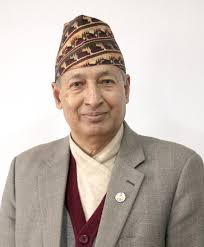

Biography:
Dr. Yuba Raj Khatiwada was the 15th governor of Nepal. He was the
governor from March 22, 2010 to March 19, 2015. Signatue of
Dr. Yuba Raj Khatiwada can be seen on the currency of
Rs 5, Rs 10, Rs 20, Rs 50, Rs 100, Rs 500 & Rs 1000. From his tenure issued year are kept in banknotes.